The Place
Life in Quothquan, 1891–1911
Quothquan is a small farming village in the Upper Ward of Clydesdale, on the slope of Quothquan Law above the River Clyde, a few miles from Biggar. Agnes Brown was living here by the age of five, and in 1907 she gave its Gean Cottage as her home. This page puts together what the records say about daily life there in her years: who lived in the cottages, how they earned a living, when they gathered, where they worshipped, and how the big house shaped it all. Every fact links to its source.
The village in old photographs
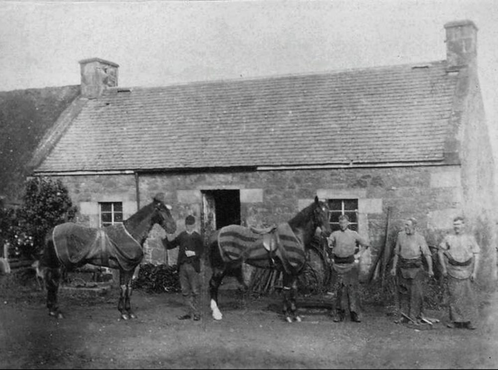
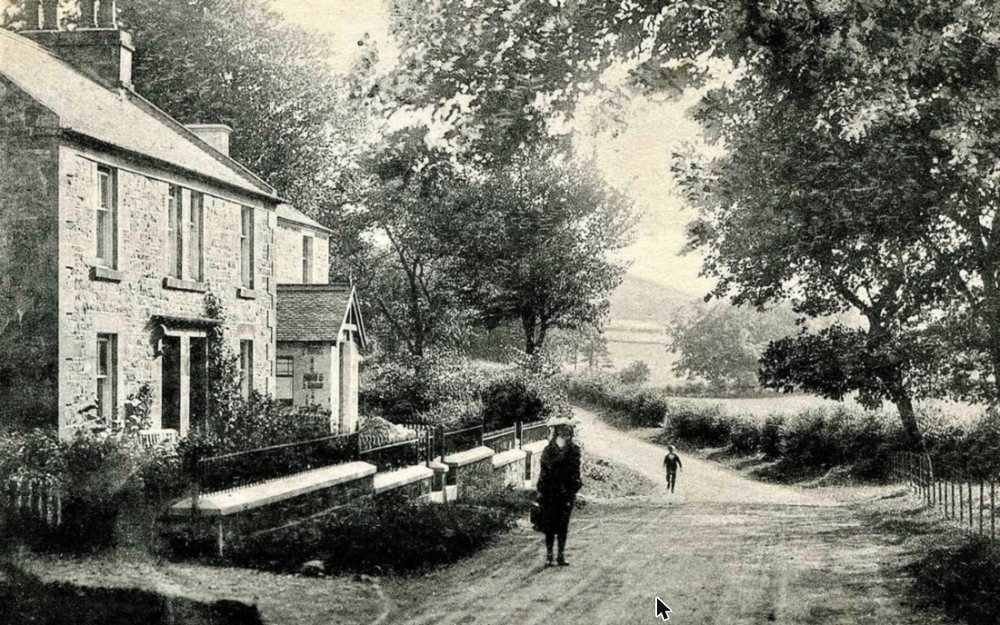
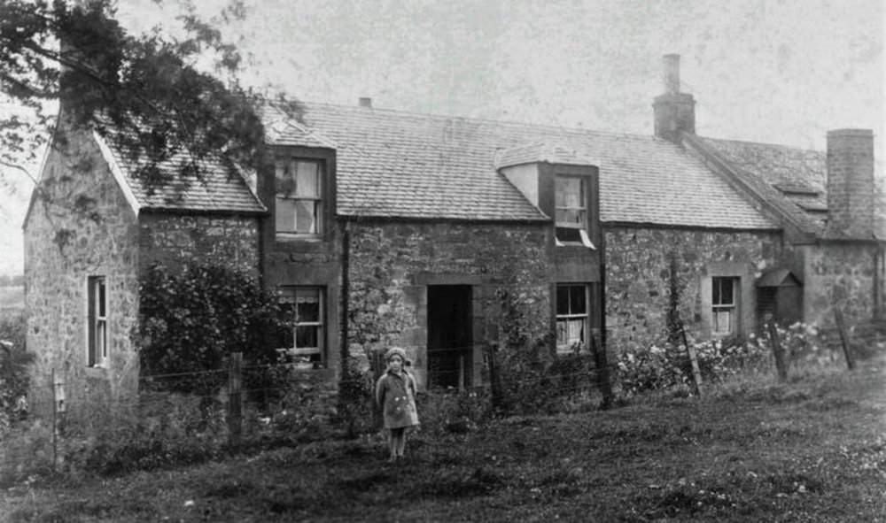
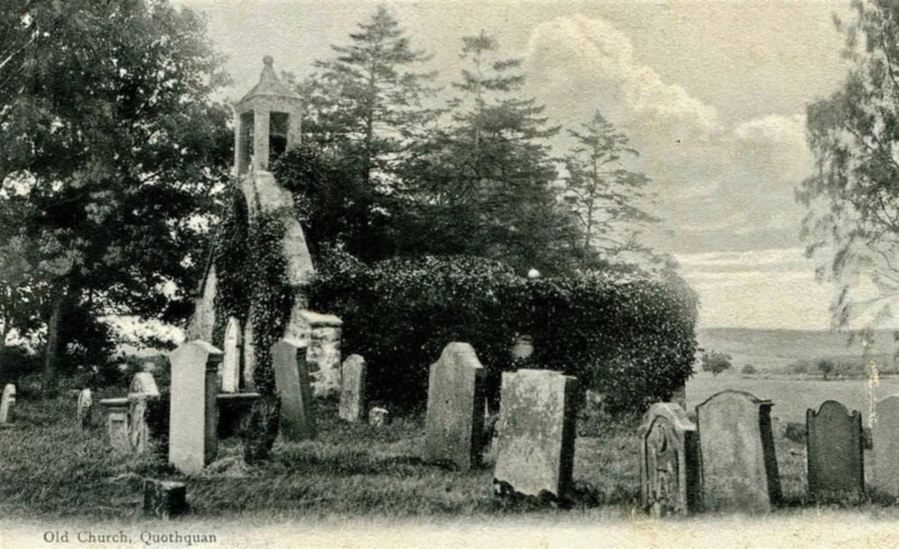
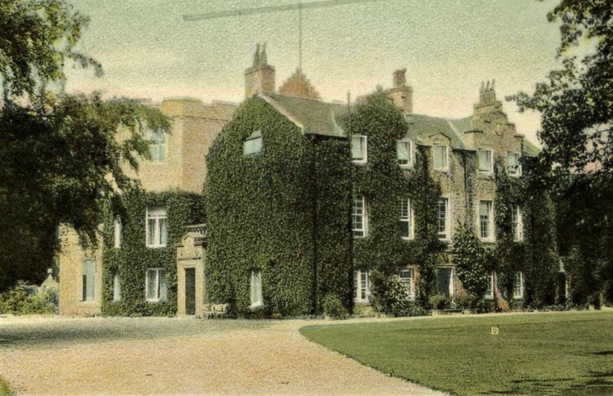
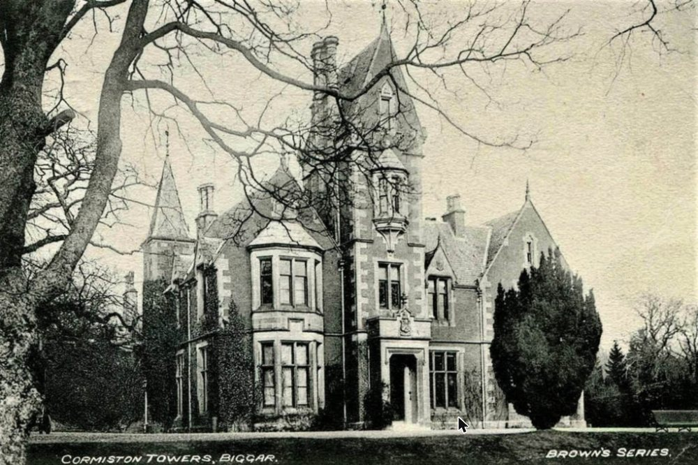
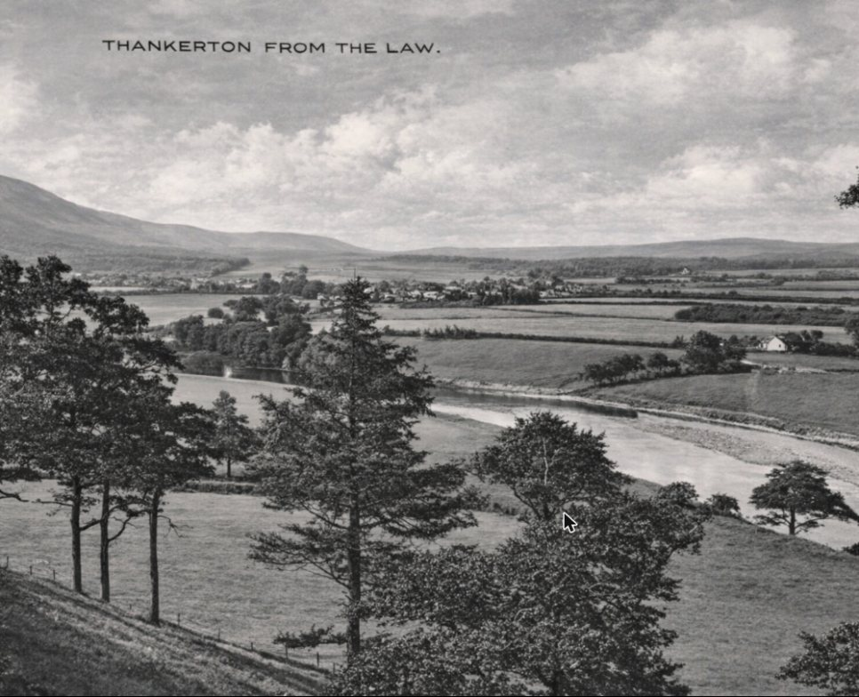
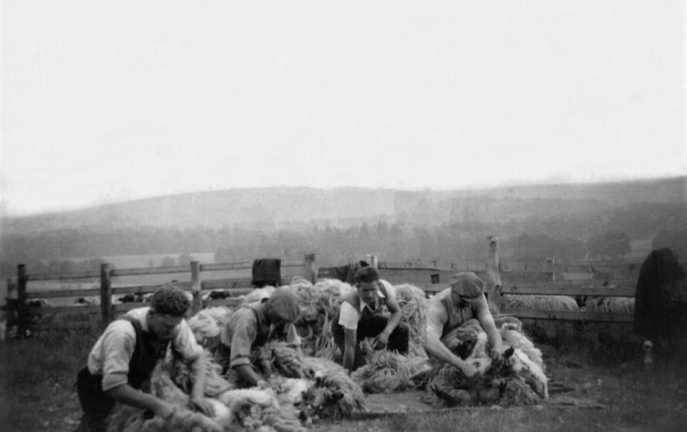
Thankerton, the next village, and Quothquan Law
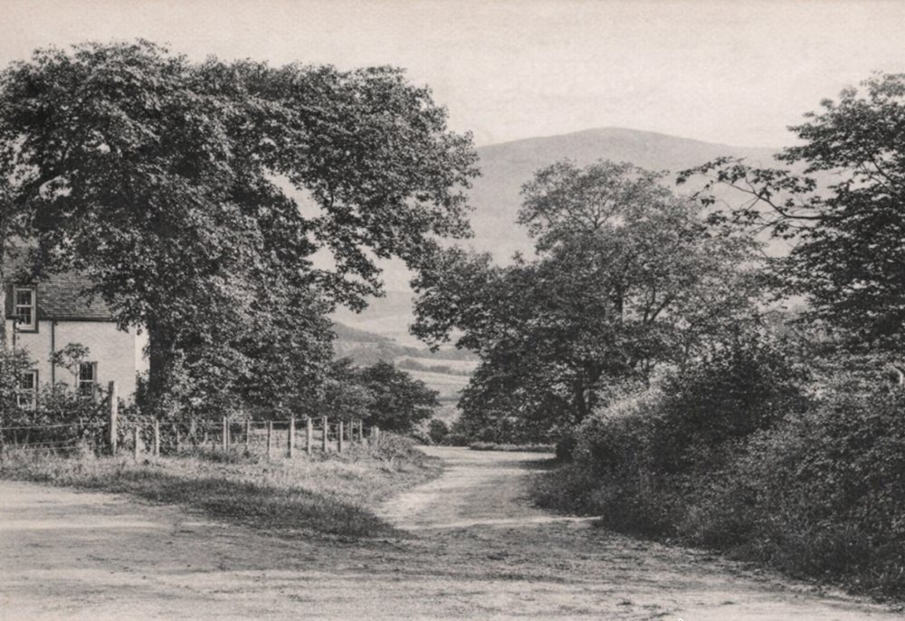
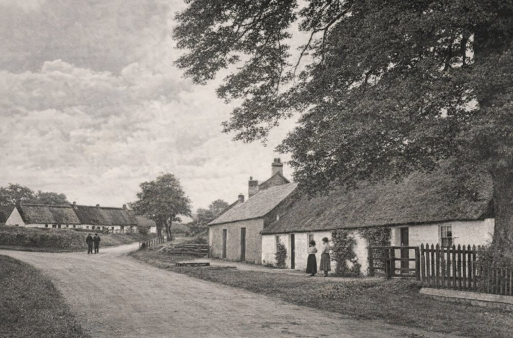
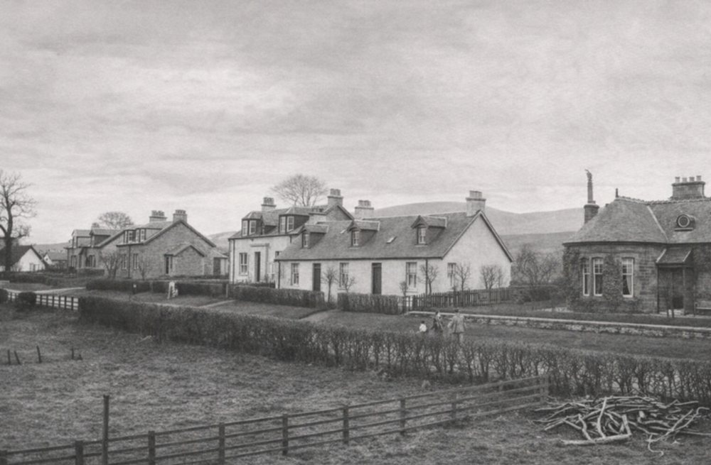
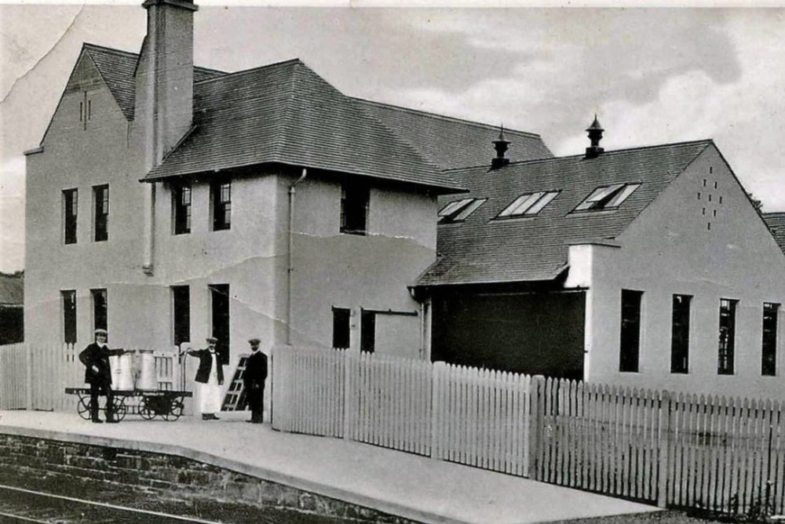
Photographs from the historical collections of the Quothquan and Thankerton Community Council (John Lyon, Charlie Todd and Jim Hope collections), shown from their site with thanks.
Shieldhill Farm today (not Shieldhill House)
This is not Shieldhill House (the Dunlops’ house, now Shieldhill Castle). It is Shieldhill Farm, a separate smallholding on the edge of Quothquan village near the castle, shown in a recent video tour from the estate agent Rettie’s sale listing. A modern view of the land around the village, not a historical record. Rettie listing
The cottages and who lived in them
In 1891 the census taker walked the row the people called Castle. Ann Archibald, 54, a crofter, lived there with her children: Mary, a crofter’s daughter; Alexander, a stonebreaker; and John, a farm servant. A visitor in the house was a handloom weaver’s daughter. Next door lived Janet Paterson, 78, listed as a pauper. In the next house, the crofter Jane Henderson kept her family: a dressmaker daughter, a young adopted farm labourer named James Parker, and two granddaughters, Mary Brown, 7, and Agnes Brown, 5. 1891 census
Ten years later the same people had spread across the little named cottages. Mary Archibald headed one of the Gean Tree Cottages, and James Grossart, 80, lived with his granddaughter in the other. At Lime Tree Cottage, Andrew Henderson, 25, kept house with James Parker as a boarder and his nieces Mary and Agnes Brown. 1901 census
The 1911 census counted rooms, and the numbers tell the story of the place. Lime Tree Cottage was a single room. Gean Tree Cottage had three. Shieldhill Mains houses had two, three and seven. Up the road, Cormiston Towers had nineteen rooms for the MacKellar family and their servant. 1911 census
Work
Almost everyone worked the land or served the estate. The censuses list crofters, farm servants, agricultural labourers, a stonebreaker, a dressmaker and domestic servants. In 1903 a James Parker, gamekeeper at Shieldhill, married; he may be the boy raised in the Henderson house, though that is not yet proved. 1903 marriage Agnes herself was a domestic servant in 1907. 1907 birth record
The village had its own smithy. The local community council’s photograph collection has an undated picture of three Lyon blacksmiths, Arthur, Peter and Charles, with horses at the forge, and a Mr Lyon helped run the 1907 club supper. There was also a mill farm, Quothquan Mill, photographed before it was rebuilt in 1936.
The Lyons came to the mill from the next parish. In 1915 the Hamilton Advertiser reported that John Lyon, for many years the smith at Ravenstruther, had taken a farm and was leaving “for their new home at Quothquan Mill.” His neighbours gave him and his wife a dining-room timepiece and a purse of sovereigns. The paper said he had worked for the Parish Flower Show and the Boy Scouts, and that his family taught Sunday School and sang in the church choir. A family tree on Ancestry gives his dates as March 22, 1860, to March 23, 1926. Clipping on Ancestry (sign-in needed)
In 1911 Ellen Dunlop paid for the Thankerton Creamery, the first in Lanarkshire, which took the hand-dairying off farm wives and servants. Quothquan and Thankerton photograph collection
The big house
Shieldhill, the house above the village, had belonged to the Chancellor family since 1434. In 1898 Nathaniel Dunlop, a Glasgow shipowner of the Allan Line, bought it, and the village of Quothquan and its cottages came with it. Sir Nathaniel Dunlop He added a tower and a new dining room in sixteenth-century style, and in November 1906 the magazine Scottish Field ran an illustrated feature on the house, describing its old west doorway with its tirling-pin and massive key. Scottish Field review, 1906 His improvements reached the village too: the community collection credits him with turning six houses at Huntfield Place into four and raising the smithy house, and in 1906 he brought a water supply to the Quothquan houses he owned. Sir Nathaniel Dunlop
The Dunlops were a constant presence. Ellen, his only child, ran much of the village’s social life. Ellen Dunlop
The year’s gatherings
| When | What happened |
|---|---|
| December 1900 | Miss Dunlop gives the village Christmas party. |
| New Year 1902 | Mr and Miss Dunlop host a supper and dance in the mansion for tenants, villagers and the house and estate servants. Source lead |
| March 9, 1906 | The Quothquan Bowling Club social: about seventy at supper in the village schoolroom, Mr Scott of Eastertown in the chair, a toast from the Rev. Mr Picken, music by Mr and Miss Jackson. Source lead |
| July 11, 1906 | The Girls’ Friendly Society holds its festival at Shieldhill; Ellen organizes it and Nathaniel welcomes the visitors. Sir Nathaniel Dunlop |
| November 1906 | At the Covington Leek Club show, “Miss Mitchell, Quothquan” takes first prize for a pair of lady’s stockings. Prize list |
| Winter 1906–07 | Twice a week, women and farm servants attend classes at Shieldhill Hall in music, singing and needlework, taught by a governess from Glasgow, with Ellen at the organ. Source lead |
| February 22, 1907 | The Quothquan Social and Recreation Club’s annual meeting: about sixty members and friends sit down to supper, then move to the schoolroom to dance. Club report |
| Late March 1907 | The classes end with a concert in Shieldhill Hall before an audience of about two hundred; Nathaniel in the chair, Ellen at the piano. Source lead |
Entries marked “source lead” come from newspaper reports supplied during the research; their full original pages are still to be attached.
Church
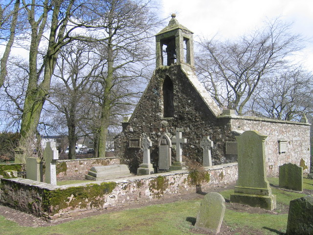
The parish church was Libberton. Its minister from 1890 to 1934 was the Rev. John Picken, who also chaired the village club suppers. The old kirk at Quothquan stood in ruins; the Chancellors of Shieldhill had used it as their family burial place since about 1780. Shieldhill and Quothquan research
In 1903 the Dunlops built Shieldhill Hall in the village, a corrugated-iron hall about 400 feet from Gean Tree Cottage. It held a Sunday evening service at 6 p.m., with a Bible class for children aged 8 to 14 beforehand, lit by paraffin lamps and warmed by a coal stove beside the pulpit. Historic Environment Scotland, LB12995 · Parish history
Before and after
The earliest map to show Quothquan and Quothquan Law is Timothy Pont’s manuscript map of 1596, held by the National Library of Scotland. Later changes came slowly: a Women’s Rural Institute was formed in Shieldhill Hall in 1918, electricity reached the hall only in 1963, and the hall was sold in 1990.
Still to add
- Tom Brown’s book on Libberton and Quothquan.
- The New Statistical Account of 1845 and the Third Statistical Account of 1960 for the parish.
- The exact date and page of the 1915 Lyon report, and whether the Mr Lyon of 1907 belongs to the same family.
- The school: the village schoolroom where the clubs danced, and its log books.